01$claude
Agents become real chats.
Start an agent in any tab and Dispatch switches it to chat: one consistent experience across Codex, Claude Code and Pi, locally or over SSH, with notifications when it needs you.
- ⇥Queuequeue or steer while the agent works
- ◆Approvepermission cards instead of y/n prompts
- ?Answeragent questions arrive as forms
- ±Difftool cards with the changes inline
- ⌘Pickmodel and effort, goals, attachments
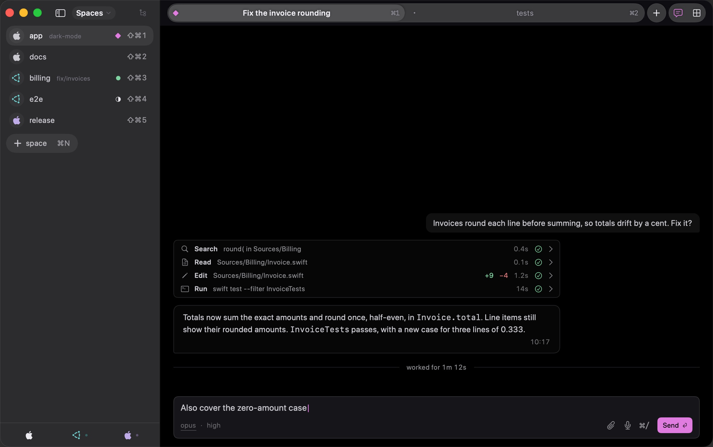
↔ swipe to see the whole window
02$tmux -CC attach
Keep tmux. Keep herdr. Get native tabs.
Dispatch maps your multiplexer onto the Mac: sessions become spaces, windows become tabs, and selecting, scrolling and editing text work the way macOS does. SSH into a host and its spaces group under it.
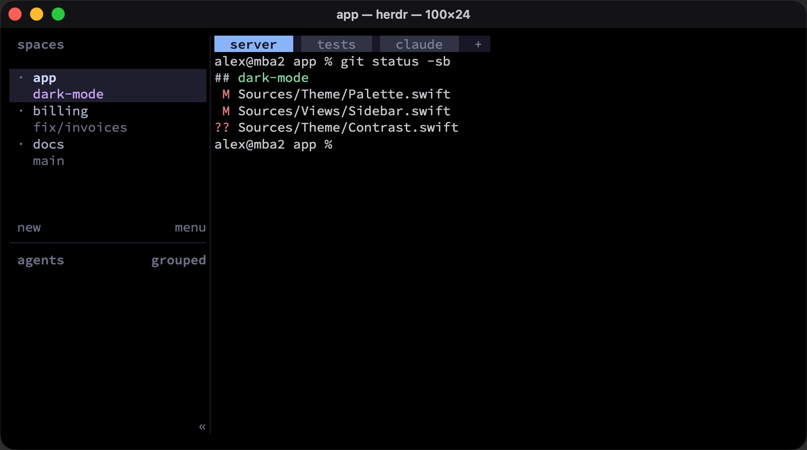
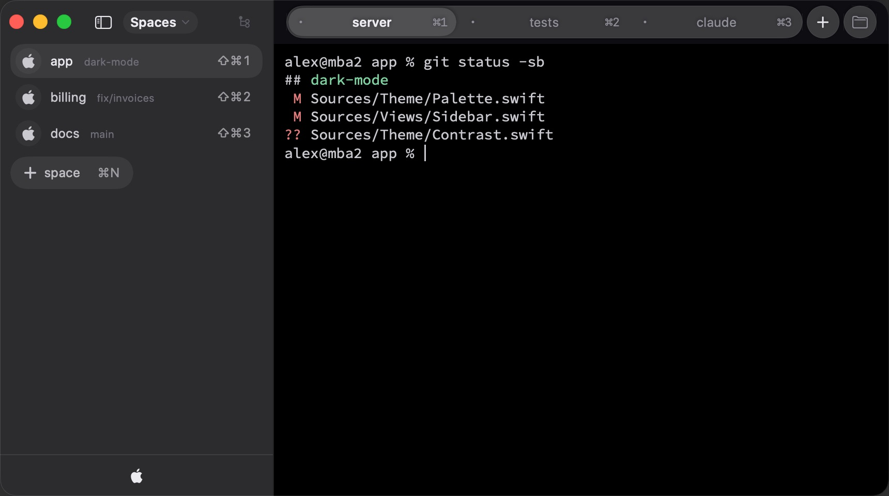
Per-host SSH
Colour-coded hosts with live stats, auto-reconnect with an overlay, and a slow-connection mode.
Keys you know
tmux-style ⌃B prefix keys, in native spaces too. Splits on ⌃1–⌃4.
One window
One window to rule them all. Instead of opening another window, add a space.
03$git diff --review
Review agents like pull requests.
Comment on any line of the diff, gather comments across files, then send the whole review to the agent in one go. Files and Commits sit one click away, locally and over SSH.
- CommentHover a line and press +, or ⏎. Comments sit under their lines.
- Finish⇧⌘⏎ lists every comment on every file, with room for an overall note.
- SendThe review lands in the agent's chat, queued if it's busy. Undo for six seconds.
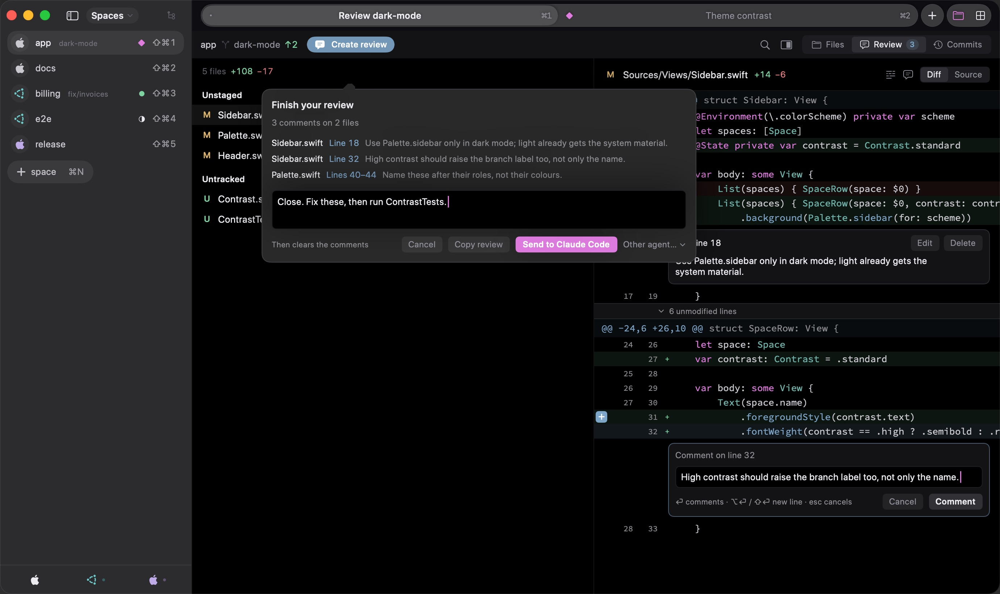
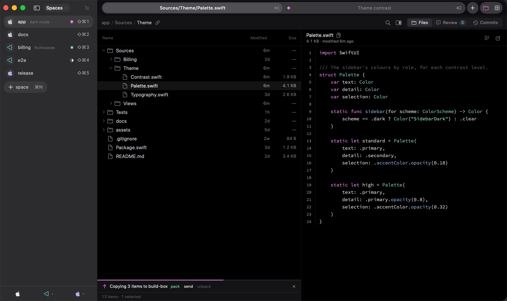
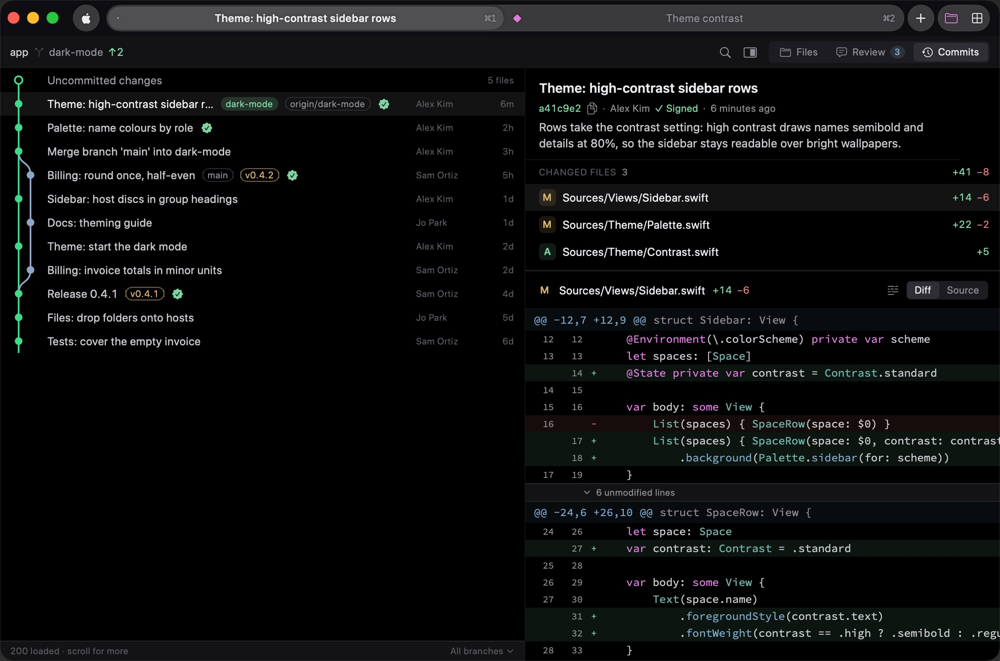
↔ swipe to see the whole window
Review: three comments on two files, sent to Claude Code in one go
Review
Line and file comments on staged, unstaged and untracked changes. Send to the tab's agent or any other, or copy the review.
Files
A tree with previews for code, Markdown, images and folders. Drag files in and out, even to and from SSH hosts.
Commits
A branch graph, ref chips, signature checks, and every commit's files and diff. Search by message or author.
04$dispatch, listen
Talk to your agents. Hands-free.
Dictate into any chat, then say “Dispatch, send.” Switch spaces and tabs, steer, answer an agent's question, or have its reply read aloud. Speech is recognised on your Mac: audio never leaves it.
- “Fix the login bug. Dispatch, send.”→ sent
- “Captain, billing, tab two”→ billing › tests
- “Option two”→ answered
- “Steer”→ steered now
- “Read that”→ reading aloud
- “Dispatch, back”→ where you were
05$dispatch +theme
Liquid Glass. Classic themes.
A design that follows Apple's guidelines, with bundled coding fonts, Ghostty's themes and config syntax, schemes made for color blindness, and a theme creator with oklch / P3 colours.
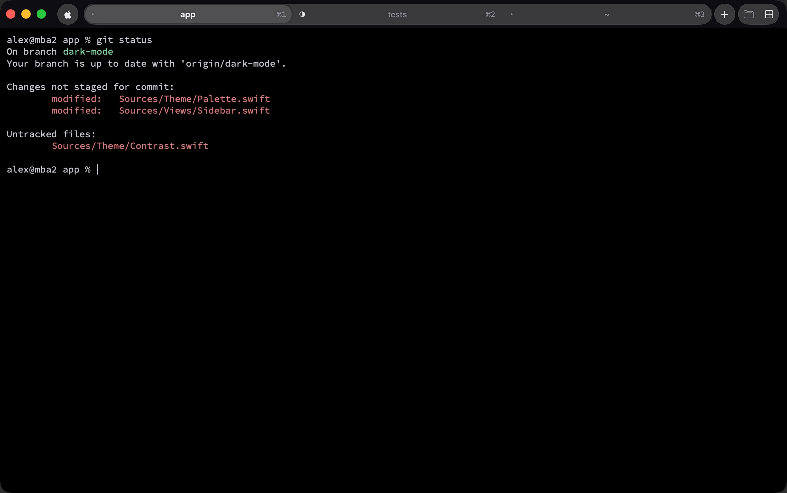
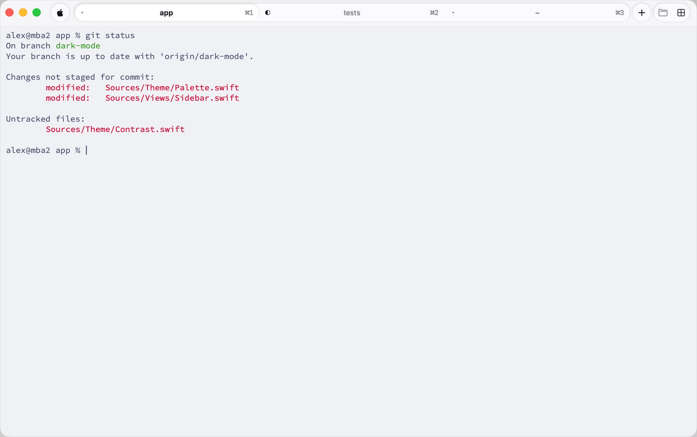
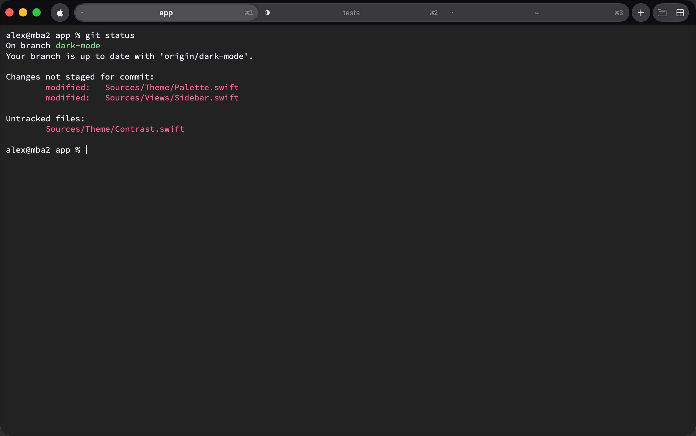
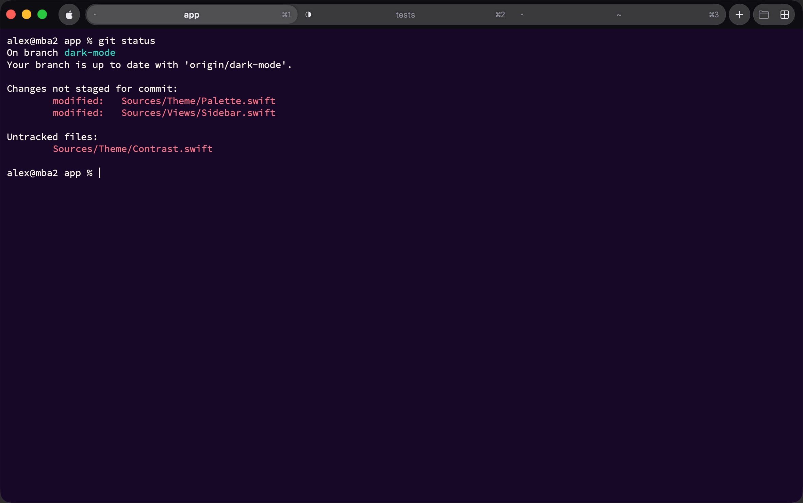
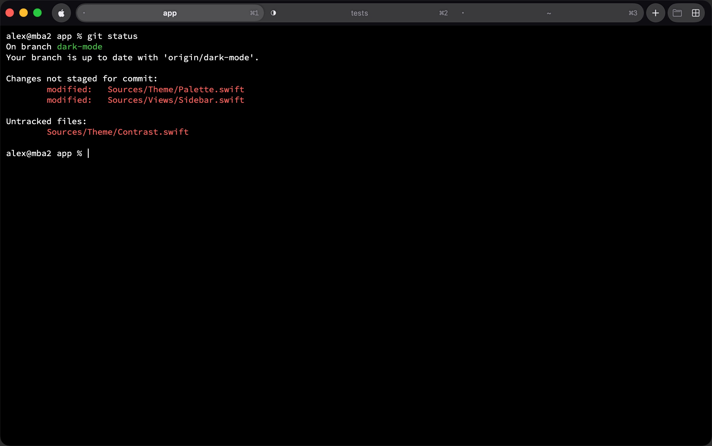
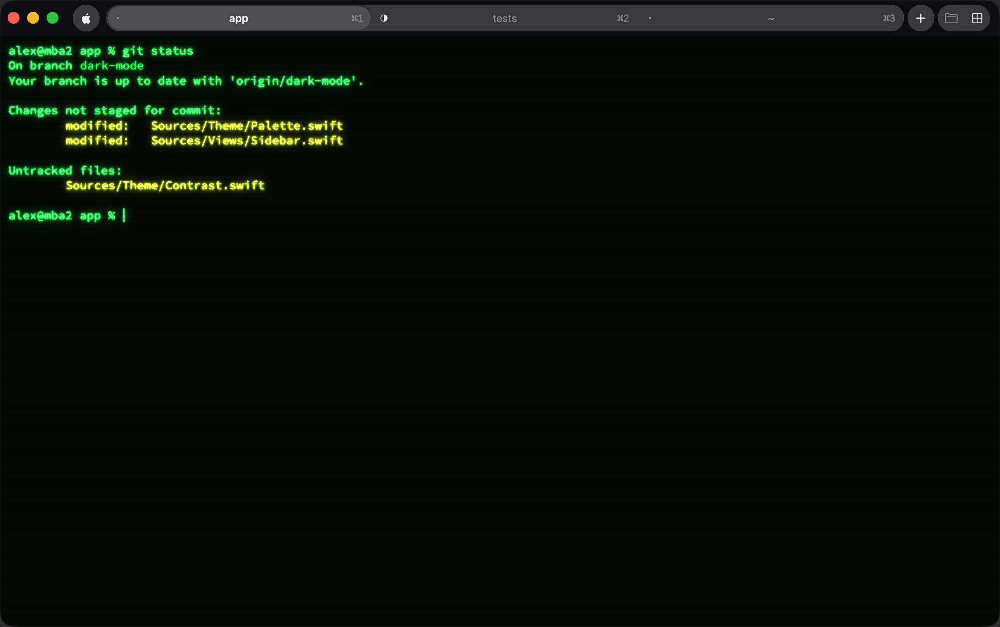
↔ swipe to see the whole window
Dispatch (OLED)
06$dispatch doctor
Local-first. No telemetry. No dependencies.
The engine is a zero-dependency Swift port of libghostty (which we love!); the original needs 37 dependencies, from a Zig compiler to 15 C libraries. A dependency-free Rust helper does the heavy lifting on your Mac and on SSH hosts, over the SSH stream you already have.
✓ telemetrynone: no analytics, no crash reports ✓ helperopens no ports; talks over ssh ✓ enginelibghostty port, 0 third-party deps ✓ dictationon-device: Apple, Whisper, Parakeet ✓ modelsno API calls; agents use their own ✓ updatesopt-in, signed and notarized ◆ all good